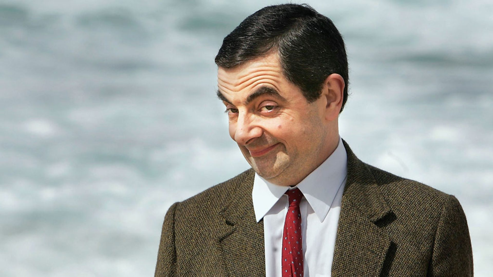

Biografia de Rowan Atkinson
Rowan Atkinson (1955) é um comediante inglês, o criador do Mr. Bean, personagem que ele interpretou na série exibida entre 1990 e 1995 e em filmes de grande sucesso.
Rowan Sebastian Atkinson (1955) nasceu em Consett, Country Durham, Inglaterra, no dia 6 de janeiro de 1955. Filho do agricultor Eric Atkinson e de Ella Bainbridge foi criado na religião anglicana.
Rowan estudou na escola privada Chadwell’s, do colégio da Catedral de Durham. Estudou na Universidade de Newcastle durante 3 anos e depois ingressou na Universidade de Oxford, graduando-se em Engenharia Elétrica.